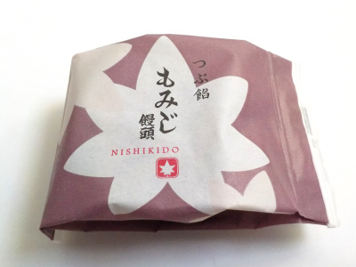
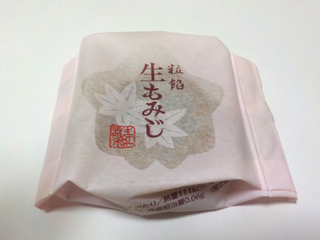
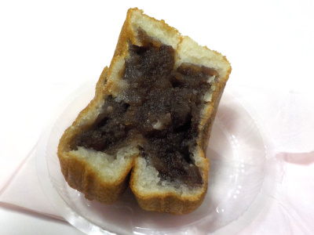
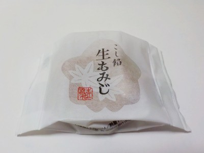
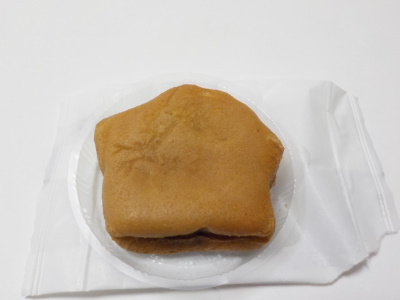

にしき堂の粒餡もみじまんじゅう。
2022/11/15

生もみじよりもこっちのパッケージデザインの方が好きです。
味もこっちの方がいいかな。
広島県広島市東区光町1丁目13番23号
2022/11/15

生もみじよりもこっちのパッケージデザインの方が好きです。
味もこっちの方がいいかな。
2022/10/01

生もみじの粒餡バージョンです。

薄皮で餡子沢山ですね。そして水分多めで全体的にしっとりしています。
もっちりしてて濃厚な生菓子でした。
しっとりした生菓子が個包装で気軽に食べれていいですね。
2021/12/17

パッケージには生もみじとは書いてあるが、もみじ饅頭とは書いてない。
なのでもみじ饅頭ではないです。

生もみじはモミジの形ではないです。どうしてでしょう？
商品が分かりにくいのでお土産向きじゃないかもしれません。
水分多めで米粉が入っているので、粘り気があるお饅頭でした。
柚子ペーストが入っているので、ちょっと複雑な味でした。